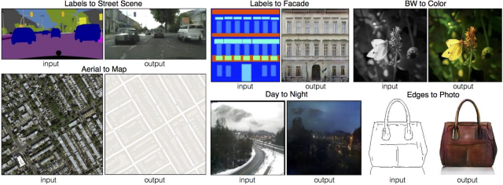
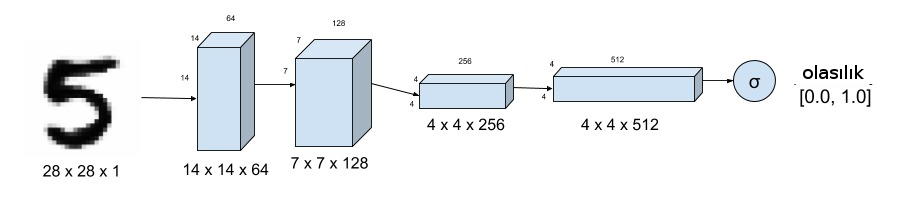
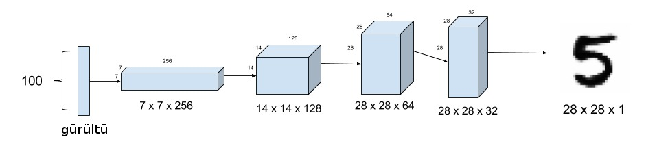

Üretici Hasımsal Ağlar (Generative Adverserial Networks -GAN-)
Derin Öğrenme ustalarından Yann LeCun GAN'leri "son 10 senede yapay öğrenmede görülen en büyük ilerleme'' olarak tarif ediyor. Burada haksız değil. YSA'lar ilk başta (geri gelişinden sonraki ilk evresinde de) bir resimde kedi, köpek ya da uçak olup olmadığını sınıflayabiliyordu. Yeni evrişimsel (convolutional) yapı ile çetrefil görüntü ilişkilerini öğrenip bunları sınıflama özelliği kazandı, fakat bunlar basit bir etikete bağlı olarak denetimli (süpervised) olarak yapıyordu.
GAN'ler denetimsiz olarak eğitilebiliyor, ve daha ilginci "üretimsel (generative)'' olarak kullanılabiliyor. Mesela pek çok görüntüye bakıp yeni görüntüler üreten bir GAN olabilir, ya da, sözel tarif verilince o tarifteki söylenen görüntüyü üreten bir GAN olabilir! Öyle ya sonuçta verilen girdi bir takım reel sayılar içeren çok boyutlu vektörlerdir, bu sayıların kelimeleri, başka görüntüleri temsil etmesi mimarı açısından çok fark yaratmaz.
Resimden resime tercüme edebilmek, "üretim yapmak'' elle çizilmiş taslakları gerçeğe çok yakın resimlere dönüştürmek, ya da tam tersi yönde gitmek mesela bir uydunun çektiği şehir resmini haritasal yollar, evler şemasına tercüme etmek, vs.

Mimari
Şimdi GAN'lerin nasıl kurulduğuna gelelim. Bir GAN yapısı kabaca bir kalpazan (üretimsel) ve polis (ayırtaç -discriminatör-) arasındaki ilişkiyi benzetilebilir. İlk başta kalpazan polise bir sahte para gösterir, polis buna sahte der. Bu noktada polis kalpazana önemli bir bilgi / geri besleme vermiş olur, kalpazan bu bilgiyi kullanarak bir sonraki sefere daha iyi sahte para basmaya uğraşabilir. Bu döngü uzun süre devam ettirilir ta ki kalpazan işleri iyice ilerletip polisi tamamen aldatabilinceye kadar.
İmajlar bağlamında düşünelim şimdi; sahte imajlar üretmek ve onları ayırdedebilmek. Üstteki anlatımdan bize iki tane ağ gerektiğinin anlayabiliriz. Birincisi ayırtaç, bu ağa imaj verilir, o da cevap olarak 0/1 olarak sahte / değil, doğru / yanlış şeklinde bir cevap hesaplar.

İkinci ağ yapısı sahte imaj üretmeye uğraşıyor, ve bu üretimi çok iyi yapmaya uğraşıyor. Peki girdi nedir? Gürültü! İkinci ağa 100 boyutlu gürültü vereceğiz (başka boyutlar da olabilir), ve bu gürültüyü işleyerek 28x28 boyutlarında bir imaj üretmesini bekleyeceğiz. Bu dahiyane bir yöntem. Ağın hayal görmesini, üretmesini istiyoruz, bu tür bir ağa gürültü, ya da hiçlikten daha iyi bir girdi verilemezdi herhalde. Bu arada eğitildikten sonra YSA'nın deterministik bir yapıda olduğunu unutmayalım, yani eğitim bitince aynı gürültü iki kere verilince aynı imaj üretilir. Değişik imajlar için değişik gürültüler vermek lazım! Değişik gürültü nasıl olur? Gaussian bazlı N(0,1) gürültü ürettiğimizi düşünelim, bazen 0'in solundan bazen sağından değer üretiyor olabiliriz. Müthiş olan YSA'nın eğitim sırasında bu tür gürültü farklarına hassas hale gelmesidir! İkinci ağ altta,

Peki eğitim verisi $X,y$ nedir, yani kaynak etiket nasıl ayarlanır? Eğitim sırasında gerçek görüntüler arasından belli sayıda dosya toplanır, bunlar "gerçek'' yani 1 etiketi, ardından elde en son olan üretece görüntü üretmesi söylenir ve bu veriler 0 etiketi ile eğitim verisine dahil edilir. Dikkat edersek MNIST bağlamında mesela bu tabandan gelen 0,1,2,. gibi etiketleri kullanmıyoruz, etiketleri kendimiz üretiyoruz.
Amaç üretecin o kadar iyi hale gelmesi ki ayırtaç gerçek imaj ile hayali olanı birbirinden ayırt edemesin.
"""
From https://github.com/eriklindernoren/Keras-GAN/tree/master/dcgan
"""
import os
import numpy as np
from tqdm import tqdm
from keras.layers import Input
from keras.models import Model, Sequential
from keras.layers.core import Reshape, Dense, Dropout, Flatten
from keras.layers.advanced_activations import LeakyReLU
from keras.layers.convolutional import Conv2D, UpSampling2D
from keras.datasets import mnist
from keras.optimizers import Adam
from keras import backend as K
from keras import initializers
K.set_image_dim_ordering('th')
# Deterministic output.
# Tired of seeing the same results every time? Remove the line below.
np.random.seed(1000)
# The results are a little better when the dimensionality of the
# random vector is only 10. The dimensionality has been left at 100
# for consistency with other GAN implementations.
randomDim = 200
def get_model():
# Optimizer
adam = Adam(lr=0.0002, beta_1=0.5)
# Generator
generator = Sequential()
generator.add(Dense(128*7*7, input_dim=randomDim, kernel_initializer=initializers.RandomNormal(stddev=0.02)))
generator.add(LeakyReLU(0.2))
generator.add(Reshape((128, 7, 7)))
generator.add(UpSampling2D(size=(2, 2)))
generator.add(Conv2D(64, kernel_size=(5, 5), padding='same'))
generator.add(LeakyReLU(0.2))
generator.add(UpSampling2D(size=(2, 2)))
generator.add(Conv2D(1, kernel_size=(5, 5), padding='same', activation='tanh'))
generator.compile(loss='binary_crossentropy', optimizer=adam)
# Discriminator
discriminator = Sequential()
discriminator.add(Conv2D(64, kernel_size=(5, 5), strides=(2, 2), padding='same', input_shape=(1, 28, 28), kernel_initializer=initializers.RandomNormal(stddev=0.02)))
discriminator.add(LeakyReLU(0.2))
discriminator.add(Dropout(0.3))
discriminator.add(Conv2D(128, kernel_size=(5, 5), strides=(2, 2), padding='same'))
discriminator.add(LeakyReLU(0.2))
discriminator.add(Dropout(0.3))
discriminator.add(Flatten())
discriminator.add(Dense(1, activation='sigmoid'))
discriminator.compile(loss='binary_crossentropy', optimizer=adam)
# Combined network
discriminator.trainable = False
ganInput = Input(shape=(randomDim,))
x = generator(ganInput)
ganOutput = discriminator(x)
gan = Model(inputs=ganInput, outputs=ganOutput)
gan.compile(loss='binary_crossentropy', optimizer=adam)
return generator, discriminator, gan
def train(epochs=1, batchSize=128):
# Load MNIST data
(X_train, y_train), (X_test, y_test) = mnist.load_data()
X_train = (X_train.astype(np.float32) - 127.5)/127.5
X_train = X_train[:, np.newaxis, :, :]
batchCount = X_train.shape[0] / batchSize
print ('Epochs: %d' % epochs)
print ('Batch size: %d' % batchSize)
print ('Batches per epoch: %d' % batchCount)
generator, discriminator, gan = get_model()
for e in range(1, epochs+1):
print ('Epoch %d' % e)
for _ in tqdm(range(int(batchCount))):
# Get a random set of input noise and images
noise = np.random.normal(0, 1, size=[batchSize, randomDim])
imageBatch = X_train[np.random.randint(0, X_train.shape[0], size=batchSize)]
# Generate fake MNIST images
generatedImages = generator.predict(noise)
X = np.concatenate([imageBatch, generatedImages])
# Labels for generated and real data
yDis = np.zeros(2*batchSize)
# One-sided label smoothing
yDis[:batchSize] = 0.9
# Train discriminator
discriminator.trainable = True
dloss = discriminator.train_on_batch(X, yDis)
# Train generator
noise = np.random.normal(0, 1, size=[batchSize, randomDim])
yGen = np.ones(batchSize)
discriminator.trainable = False
gloss = gan.train_on_batch(noise, yGen)
generator.save('dcgan_generator_epoch_%d.h5' % e)
discriminator.save('dcgan_discriminator_epoch_%d.h5' % e)
if __name__ == '__main__':
train(50, 128)
Eğittikten sonra bir gürültü verip üretim yapalım,
import mnist_dcgan
generator, discriminator, gan = mnist_dcgan.get_model()
generator.load_weights("dcgan_generator_epoch_50.h5")
noise = np.random.randn(1,200)
pixels = generator.predict(noise).reshape((28,28))
plt.imshow(pixels)
plt.gray()
plt.savefig('gan_01.png')
Bir kez daha gürültü üretelim ve imaj üretelim,
noise = np.random.randn(1,200)
pixels = generator.predict(noise).reshape((28,28))
plt.imshow(pixels)
plt.gray()
plt.savefig('gan_03.png')
Bu çıktıların görüntüsü ilginç değil mi? Aslında MNİST imajlarına tıpatıp benzemiyorlar, "hayal edilmiş'' ya da "tekrar oluşturulmuş'' bir halleri var sanki. GAN'lerin sihri burada.
Kaynaklar
[1] https://towardsdatascience.com/gans-n-roses-c6652d513260
[2] https://towardsdatascience.com/gan-by-example-using-keras-on-tensorflow-backend-1a6d515a60d0
Yukarı